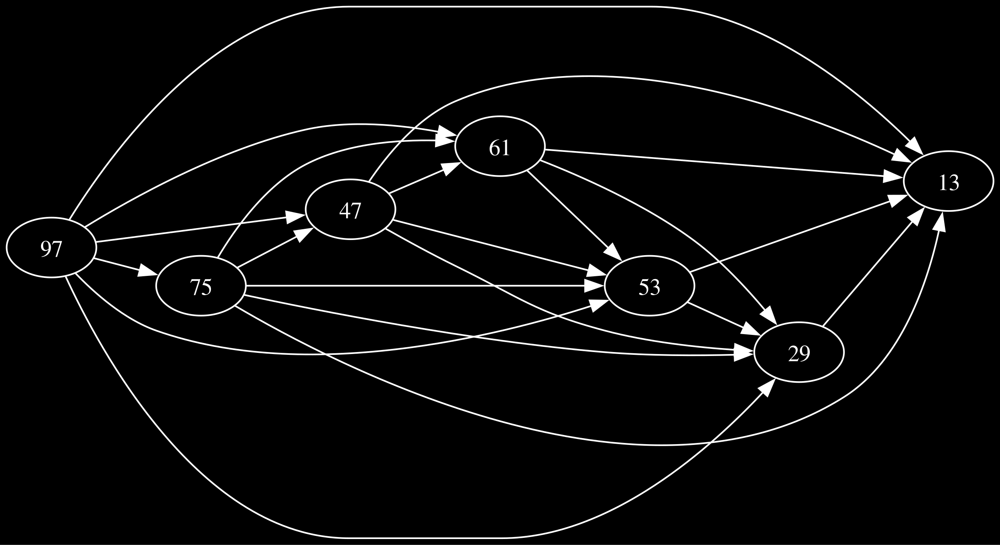
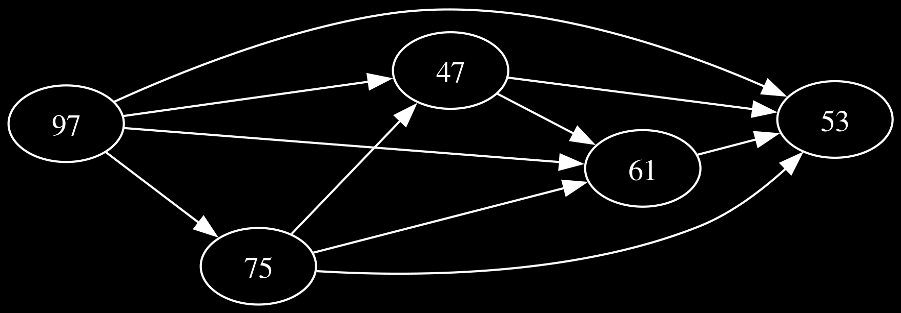

Ordering using DAGs and Top-SortingAdvent of Code ’24, Day 5 |
Version | v0.1.0 | |
|---|---|---|---|
| Updated | |||
| Author | Nirv | License | MIT |
This post is about Day 5 of Advent of Code 2024. The problem involves ordering pages based on some rules and I ended up using a DAG for it, and the overall idea was interesting enough to write about.
We’re presented with a scenario where a printer needs to print manual pages in a specific order. The input consists of two sections:
Our task is two-fold:
1. Identify which updates are already in the correct order.
2. Fix the incorrect updates using the given rules.
Here’s a small example of the input:
╭────────────────╮
│47|53 │
│97|13 │
│97|61 │
│... │
│ │
│75,47,61,53,29 │
│97,61,53,29,13 │
│75,29,13 │
│... │
╰────────────────╯The first part is relatively straightforward. For each update sequence, we need to check if it satisfies all applicable rules. Let’s break down how we can do this:
╭───────────────────────────────────────────────────────────────────────╮
│function IsValidOrder(update, rules): │
│ // Create a set of all pages in this update │
│ update_pages = create set from update │
│ │
│ // Map each page to its position in the sequence │
│ positions = empty map │
│ for i = 0 to length(update) - 1: │
│ positions[update[i]] = i │
│ │
│ // Check each rule │
│ for each rule in rules: │
│ // Only check rules where both pages are in this update │
│ if rule.before in update_pages AND rule.after in update_pages: │
│ // 'before' page must appear earlier than 'after' page │
│ if positions[rule.before] >= positions[rule.after]: │
│ return false │
│ │
│ return true │
╰───────────────────────────────────────────────────────────────────────╯
Update sequence: [75, 47, 61, 53, 29]
Pages in update: {75, 47, 61, 53, 29}
Position map: {75: 0, 47: 1, 61: 2, 53: 3, 29: 4}
Checking rules:
Rule 47|53:
47 at position 1
53 at position 3
✓ Rule satisfied
Rule 75|29:
75 at position 0
29 at position 4
✓ Rule satisfied
Rule 75|53: 75 at position 0
53 at position 3
✓ Rule satisfied
Rule 53|29:
53 at position 3
29 at position 4
✓ Rule satisfied
Rule 61|53:
61 at position 2
53 at position 3
✓ Rule satisfied
Rule 61|29:
61 at position 2
29 at position 4
✓ Rule satisfied
Rule 75|47:
75 at position 0
47 at position 1
✓ Rule satisfied
Rule 47|61:
47 at position 1
61 at position 2
✓ Rule satisfied
Rule 75|61:
75 at position 0
61 at position 2
✓ Rule satisfied
Rule 47|29:
47 at position 1
29 at position 4
✓ Rule satisfied
The second part is where things get fun.
Each rule “X|Y” can be seen as a directed edge in a graph where: - Pages are nodes - Rules are directed edges (X → Y) - A valid order is a topological sort of this graph

For example, with an invalid update [75,97,47,61,53], we first build a graph of just these pages and their applicable rules:

We use Kahn’s algorithm for topological sorting:
╭────────────────────────────────────────────────────╮
│L ← Empty list that will contain the sorted elements│
│S ← Set of all nodes with no incoming edge │
│ │
│while S is not empty do │
│ remove a node n from S │
│ add n to L │
│ for each node m with an edge e from n to m do │
│ remove edge e from the graph │
│ if m has no other incoming edges then │
│ insert m into S │
│ │
│if graph has edges then │
│ return error (graph has at least one cycle) │
│else │
│ return L (a topologically sorted order) │
╰────────────────────────────────────────────────────╯
Invalid update: [75, 97, 47, 61, 53]
Topological Sort Process:
Initial in-degrees: {97: 0, 75: 1, 47: 2, 53: 4, 61: 3}
Initial graph: {47: [53, 61], 97: [61, 47, 53, 75], 75: [53, 47, 61],
61: [53]}
Queue: [97]
Current result: []
Processed 97 -> 61, new in-degree: 2
Processed 97 -> 47, new in-degree: 1
Processed 97 -> 53, new in-degree: 3
Processed 97 -> 75, new in-degree: 0
Queue: [75]
Current result: [97]
Processed 75 -> 53, new in-degree: 2
Processed 75 -> 47, new in-degree: 0
Processed 75 -> 61, new in-degree: 1
Queue: [47]
Current result: [97, 75]
Processed 47 -> 53, new in-degree: 1
Processed 47 -> 61, new in-degree: 0
Queue: [61] Current result: [97, 75, 47] Processed 61 -> 53, new in-degree: 0
Queue: [53]
Current result: [97, 75, 47, 61]
1.Problem Translation: The key insight was recognizing this as a graph problem. The rules effectively define a directed acyclic graph (DAG) where edges represent ordering constraints.
2.Solution Quality: The topological sort ensures we get a valid ordering that respects all rules, and Kahn’s algorithm is particularly nice because it tends to produce a “natural” ordering.
This puzzle is a great example of how graph theory is very cool. Read graph theory papers when bored.